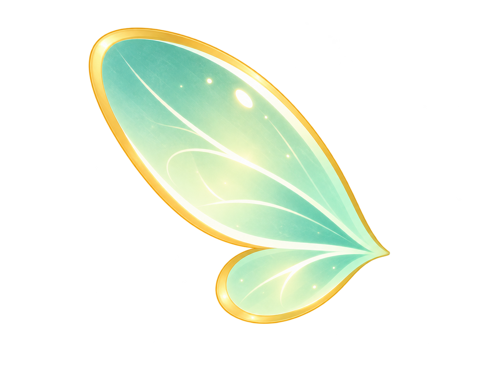
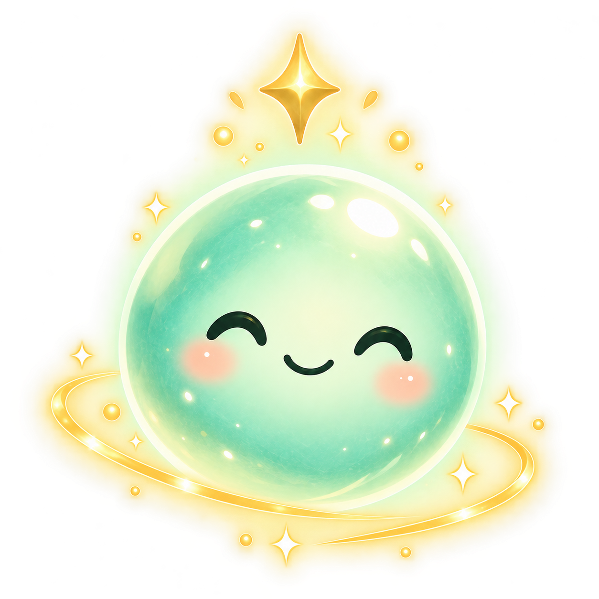

A softer way to move.
One familiar face. Wings that flutter continuously. A little wave when you say hello.


Tap Farishta for a little wave.
One familiar face. Wings that flutter continuously. A little wave when you say hello.


Tap Farishta for a little wave.